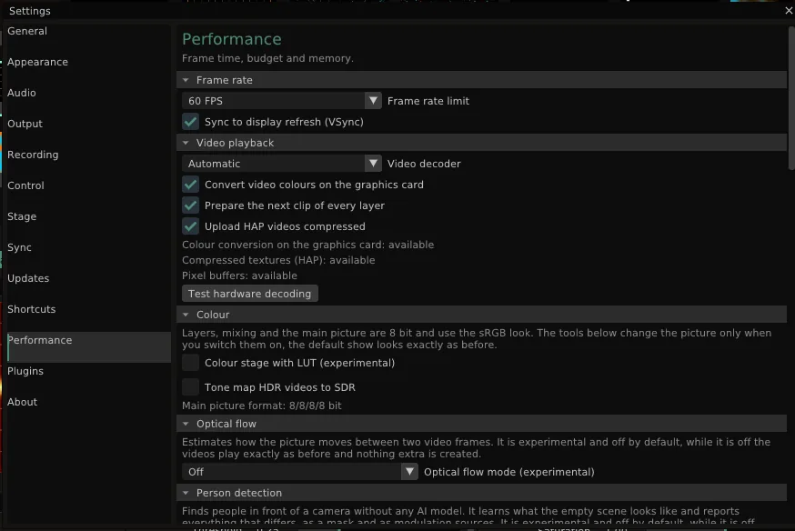

Contents
Getting started
- Welcome to NyrexVJ
- Installing and first start
- The window at a glance
- Your first show in five minutes
Playing visuals
- The clip grid
- Decks and transitions
- Layers and blending
- The Clip window
- Effects
- The Library
- Presets and sessions
- The Master window
Music and motion
Your own content
- Video and image clips
- Your own shaders
- 3D models
- The Clip Creator
- Text, particles and effect chains
- The node effect editor
- Live sources: Spout, NDI and cameras
Output and recording
Live control and shows
- Control: MIDI, OSC and the web page
- Show sync and timecode
- The show timeline
- Stage: DMX, VRSL and VRChat
- Plugins
Reference and help
Manual / Reference and help
Performance
#Why it matters
A live show needs a steady frame rate. NyrexVJ is light, but many layers, heavy effects, large videos and 3D models add up. Settings, Performance shows what takes the time, and the status bar can show the timings if you tick Show timings in the status bar.


#Frame rate and budget
Frame rate limit caps how often the program draws a frame, with or without VSync. A lower limit leaves more graphics and processor time for VRChat on the same computer. The frame budget is the time one frame may take, derived from your target frame rate. Frames above it count as too slow, and the page shows how many frames stayed within the budget, the average, the slowest five percent and the worst frame.
#Render quality
Layer resolution draws the layers and their effects at a lower size and scales them up when they are mixed. Full quality changes nothing, Balanced draws at 75 percent, Performance at 50 percent. Automatic lowers the resolution in small steps only while a frame takes longer than the budget and raises it again when there is room. Master effects and every output stay at full resolution.
#Text and particles
Particle limit per layer is the most particles a particle clip may have alive at once, from 64 to 16,384, and 2048 at the start. When the limit is reached newer particles are dropped and the picture stays smooth. Each particle costs 24 bytes of graphics memory. Show text and particle clips in the library hides them all from the Library. See Text, particles and effect chains.
#What costs time
- A layer faded to zero opacity is not drawn, so hidden layers cost nothing.
- Every effect is one more pass over the picture. Replace a stack of effects with one node effect if you can.
- Large videos cost decoding time. HAP videos cost almost nothing on the processor, see Video and image clips.
- Live sources are closed three seconds after the last use.
- 3D models and scenes cost graphics time by their triangle count.
The page also shows the memory: an estimate of the graphics memory, the video memory and the program memory, and which clip or effect takes the time. Measured numbers and limits are in docs/PERFORMANCE.md of the project.
Found a mistake or something missing? Tell us on GitHub. The same manual is built into the program, so you have it without internet. Open it with F1 or from the Help menu, then User manual.